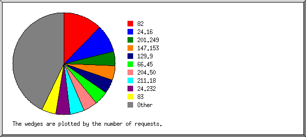
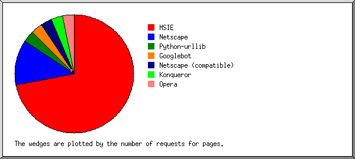

(Go To: Top: General Summary: Daily Report: Daily Summary: Hourly Summary: Organisation Report: Browser Summary: Operating System Report: Status Code Report: File Size Report: File Type Report: Directory Report: Failure Report: Request Report)
This report contains overall statistics.
Successful requests: 12
Average successful requests per day: 1
Successful requests for pages: 12
Average successful requests for pages per day: 1
Failed requests: 28
Distinct files requested: 2
Distinct hosts served: 11
Data transferred: 50.173 kilobytes
Average data transferred per day: 8.283 kilobytes
(Go To: Top: General Summary: Daily Report: Daily Summary: Hourly Summary: Organisation Report: Browser Summary: Operating System Report: Status Code Report: File Size Report: File Type Report: Directory Report: Failure Report: Request Report)
This report lists the activity in each day.
Each unit ( ) represents 1 request
for a page.
) represents 1 request
for a page.
date: reqs: pages: kbytes: ---------: ----: -----: -------: 15/Dec/03: 1: 1: 4.554:Busiest day: 20/Dec/03 (4 requests for pages).16/Dec/03: 2: 2: 9.109:
17/Dec/03: 0: 0: 0.000: 18/Dec/03: 2: 2: 9.109:
21/Dec/03: 1: 1: 4.554:
(Go To: Top: General Summary: Daily Report: Daily Summary: Hourly Summary: Organisation Report: Browser Summary: Operating System Report: Status Code Report: File Size Report: File Type Report: Directory Report: Failure Report: Request Report)
This report lists the total activity for each day of the week, summed over all the weeks in the report.
Each unit ( ) represents 1 request
for a page.
) represents 1 request
for a page.
day: reqs: pages: ---: ----: -----: Sun: 1: 1:
(Go To: Top: General Summary: Daily Report: Daily Summary: Hourly Summary: Organisation Report: Browser Summary: Operating System Report: Status Code Report: File Size Report: File Type Report: Directory Report: Failure Report: Request Report)
This report lists the total activity for each hour of the day, summed over all the days in the report.
Each unit ( ) represents 1 request
for a page.
) represents 1 request
for a page.
hour: reqs: pages: ----: ----: -----: 0: 2: 2:
(Go To: Top: General Summary: Daily Report: Daily Summary: Hourly Summary: Organisation Report: Browser Summary: Operating System Report: Status Code Report: File Size Report: File Type Report: Directory Report: Failure Report: Request Report)
This report lists the organisations of the computers which requested files.

Listing organisations, sorted by the number of requests.
reqs: %bytes: organisation ----: ------: ------------ 2: 18.16%: 65.94 1: 9.08%: 24.129 1: 9.08%: 66.207 1: 9.08%: 195.222 1: 9.08%: 63.148 1: 9.08%: 64.68 1: 0.14%: 216.88 1: 9.08%: 66.196 1: 9.08%: 213.114 1: 9.08%: 69 1: 9.08%: 64.241
(Go To: Top: General Summary: Daily Report: Daily Summary: Hourly Summary: Organisation Report: Browser Summary: Operating System Report: Status Code Report: File Size Report: File Type Report: Directory Report: Failure Report: Request Report)
This report lists the vendors of visitors' browsers.

Listing browsers with at least 1 request for a page, sorted by the number of requests for pages.
no.: reqs: pages: browser ---: ----: -----: ------- 1: 5: 5: Netscape (compatible) 2: 3: 3: MSIE : 3: 3: MSIE/5 3: 1: 1: Netscape 4: 1: 1: Googlebot : 1: 1: Googlebot/2
(Go To: Top: General Summary: Daily Report: Daily Summary: Hourly Summary: Organisation Report: Browser Summary: Operating System Report: Status Code Report: File Size Report: File Type Report: Directory Report: Failure Report: Request Report)
This report lists the operating systems used by visitors.

Listing operating systems, sorted by the number of requests for pages.
no.: reqs: pages: OS ---: ----: -----: -- 1: 6: 6: OS unknown 2: 3: 3: Windows : 3: 3: Windows 2000 3: 1: 1: Known robots
(Go To: Top: General Summary: Daily Report: Daily Summary: Hourly Summary: Organisation Report: Browser Summary: Operating System Report: Status Code Report: File Size Report: File Type Report: Directory Report: Failure Report: Request Report)
This report lists the HTTP status codes of all requests.

Listing status codes, sorted numerically.
reqs: status code ----: ----------- 12: 200 OK 28: 404 Document not found
(Go To: Top: General Summary: Daily Report: Daily Summary: Hourly Summary: Organisation Report: Browser Summary: Operating System Report: Status Code Report: File Size Report: File Type Report: Directory Report: Failure Report: Request Report)
This report lists the sizes of files.

size: reqs: pages: kbytes:
----------: ----: -----: -------:
0: 0: 0: 0.000:
1b- 10b: 0: 0: 0.000:
11b- 100b: 1: 1: 0.072:
101b- 1kb: 0: 0: 0.000:
1kb- 10kb: 11: 11: 50.101:
(Go To: Top: General Summary: Daily Report: Daily Summary: Hourly Summary: Organisation Report: Browser Summary: Operating System Report: Status Code Report: File Size Report: File Type Report: Directory Report: Failure Report: Request Report)
This report lists the extensions of requested files.

Listing extensions with at least 0.1% of the traffic, sorted by the amount of traffic.
reqs: %bytes: extension ----: ------: --------- 11: 99.86%: [directories] 1: 0.14%: .htm [Hypertext Markup Language]
(Go To: Top: General Summary: Daily Report: Daily Summary: Hourly Summary: Organisation Report: Browser Summary: Operating System Report: Status Code Report: File Size Report: File Type Report: Directory Report: Failure Report: Request Report)
This report lists the directories from which files were requested. (The figures for each directory include all of its subdirectories.)
Listing directories with at least 0.01% of the traffic, sorted by the amount of traffic.
reqs: pages: kbytes: directory ----: -----: -------: --------- 12: 12: 50.173: [root directory]
(Go To: Top: General Summary: Daily Report: Daily Summary: Hourly Summary: Organisation Report: Browser Summary: Operating System Report: Status Code Report: File Size Report: File Type Report: Directory Report: Failure Report: Request Report)
This report lists the files that caused failures, for example files not found.

Listing files, sorted by the number of failed requests.
reqs: file ----: ---- 17: /robots.txt 2: /parts.htm 2: /pictures.htm 2: /sell.htm 2: /trade.htm 1: /contact.htm 1: /blank.htm 1: /buy.htm
(Go To: Top: General Summary: Daily Report: Daily Summary: Hourly Summary: Organisation Report: Browser Summary: Operating System Report: Status Code Report: File Size Report: File Type Report: Directory Report: Failure Report: Request Report)
This report lists the files on the site.
Listing files with at least 20 requests, sorted by the number of requests.
reqs: kbytes: last time: file ----: -------: ---------------: ---- 12: 50.173: 21/Dec/03 16:07: [not listed: 2 files]
(Go To: Top: General Summary: Daily Report: Daily Summary: Hourly Summary: Organisation Report: Browser Summary: Operating System Report: Status Code Report: File Size Report: File Type Report: Directory Report: Failure Report: Request Report)